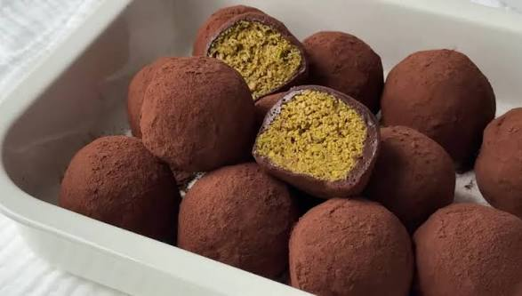

두바이 쫀득쿠키
카다이프 면, 피스타치오 크림, 초콜릿이 어우러진 쫀득한 두바이 스타일 쿠키
레시피 영상으로 이동


재료
- 2.1 ounces 구운 카다이프 면
- 5.7 ounces 피스타치오 페이스트
- 1.1 ounces 화이트 초콜릿 (녹인 것)
- 3.1 ounces 마시멜로우
- 0.6 ounces 무염 버터
- 0.3 ounces 탈지분유 (or 자판기 우유 파우더)
- 0.5 ounces 코코아파우더 (반죽용)
- 0.7 ounces 코코아파우더 (겉 코팅용)
- 1 teaspoons 식용유 (손에 바를 용)
레시피
-
속재료 (필링) 만들기:
구운 카다이프 면 2.1 ounces 구운 카다이프 면에 피스타치오 페이스트 5.7
ounces 피스타치오 페이스트와 녹인 화이트 초콜릿 1.1 ounces 화이트 초콜릿
(녹인 것)을 넣고 주걱으로 골고루 섞어주세요. 라텍스 장갑을 끼고 손으로
뭉치면 더 편해요.
-
속재료 냉동 굳히기:
섞은 필링을 8개로 동일하게 나눠 동그랗게
모양을 잡아주세요. 밀폐용기나 접시에 담아 냉동실에
30분 이상 단단하게 굳혀주세요. 굳혀야 나중에 마시멜로
피로 감쌀 때 모양이 무너지지 않아요.
-
마시멜로 피 만들기:
팬에 버터 0.6 ounces 무염 버터를 녹인 뒤
마시멜로우 3.1 ounces 마시멜로우를 넣고 완전 약불에서 천천히 녹여주세요.
센 불에서 녹이면 쓴맛이 나니 꼭 약불로! 형태가 완전히 사라지면 불을 끄고
미리 체에 쳐둔 코코아파우더 0.5 ounces 코코아파우더 (반죽용)와 탈지분유
0.3 ounces 탈지분유 (or 자판기 우유 파우더)를 넣고 덩어리 없이
빠르게 섞어주세요.
-
마시멜로 반죽 식히기 & 분할:
기름칠한 그릇이나 바트에 반죽을 부어
살짝 식혀주세요. 반죽을 8개로 나눠주세요. 반죽이 너무 굳으면
전자레인지에 10초씩 돌려 다시 부드럽게 만들어주세요.
-
성형하기:
손에 식용유 1 teaspoons 식용유 (손에 바를 용)를 골고루
발라주세요. 마시멜로 반죽 1개를 호떡 만들듯 얇고 넓게 펴주세요.
피가 얇을수록 맛있어요! 냉동해 둔 카다이프 속을 가운데
올리고 반죽으로 완전히 감싸 동그랗게 모양을 잡아주세요. 반죽이 굳기 전에
빠르게 작업해야 해요.
-
코코아파우더 코팅 & 완성:
체에 친 코코아파우더 0.7 ounces 코코아파우더 (겉 코팅용)를 그릇에 넉넉히
담고 완성된 쿠키를 굴려 겉면 전체에 골고루 묻혀주세요. 냉장고에서 최소
2시간 숙성하면 더 맛있어요!